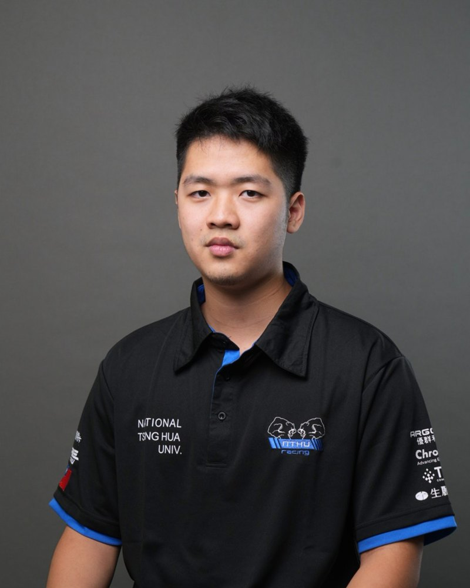
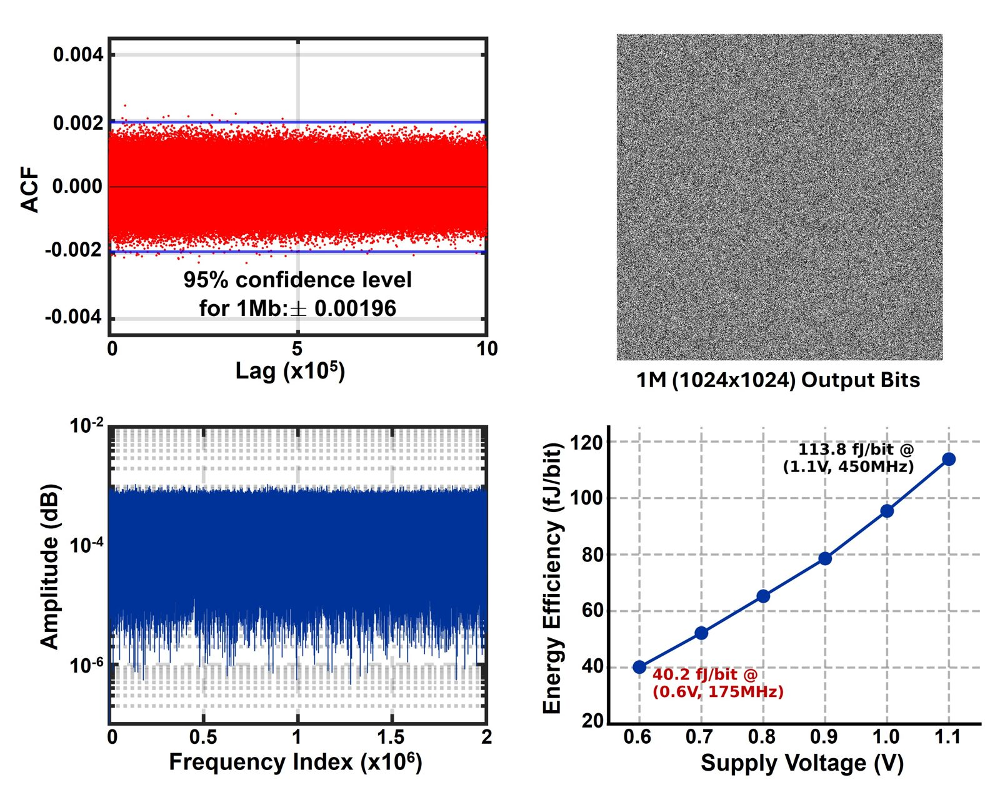
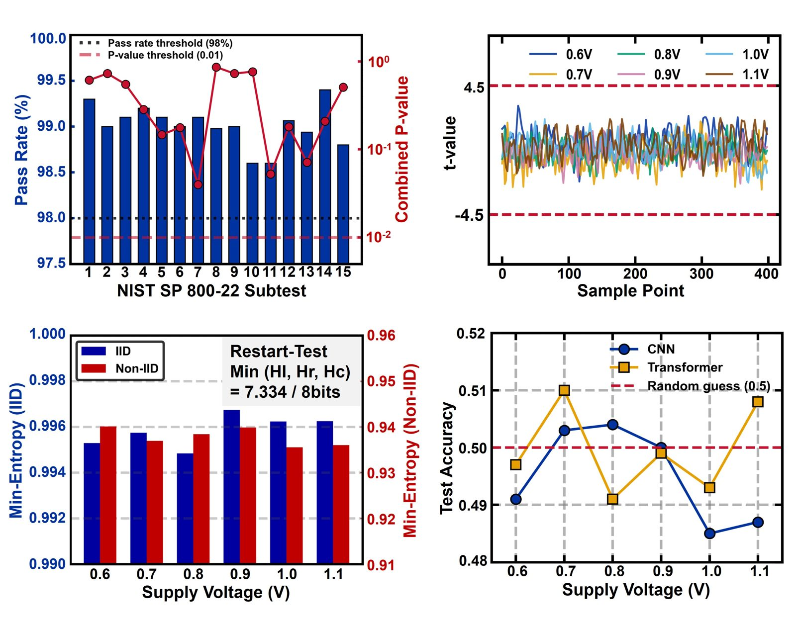
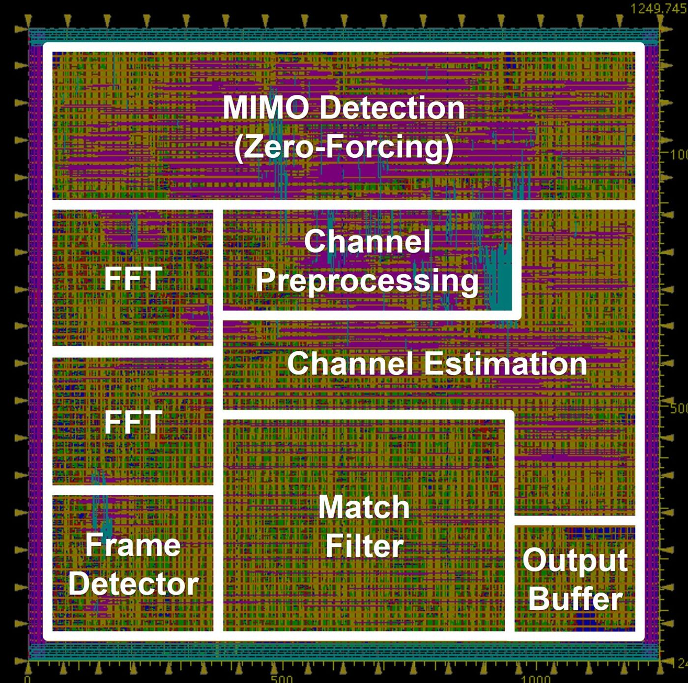
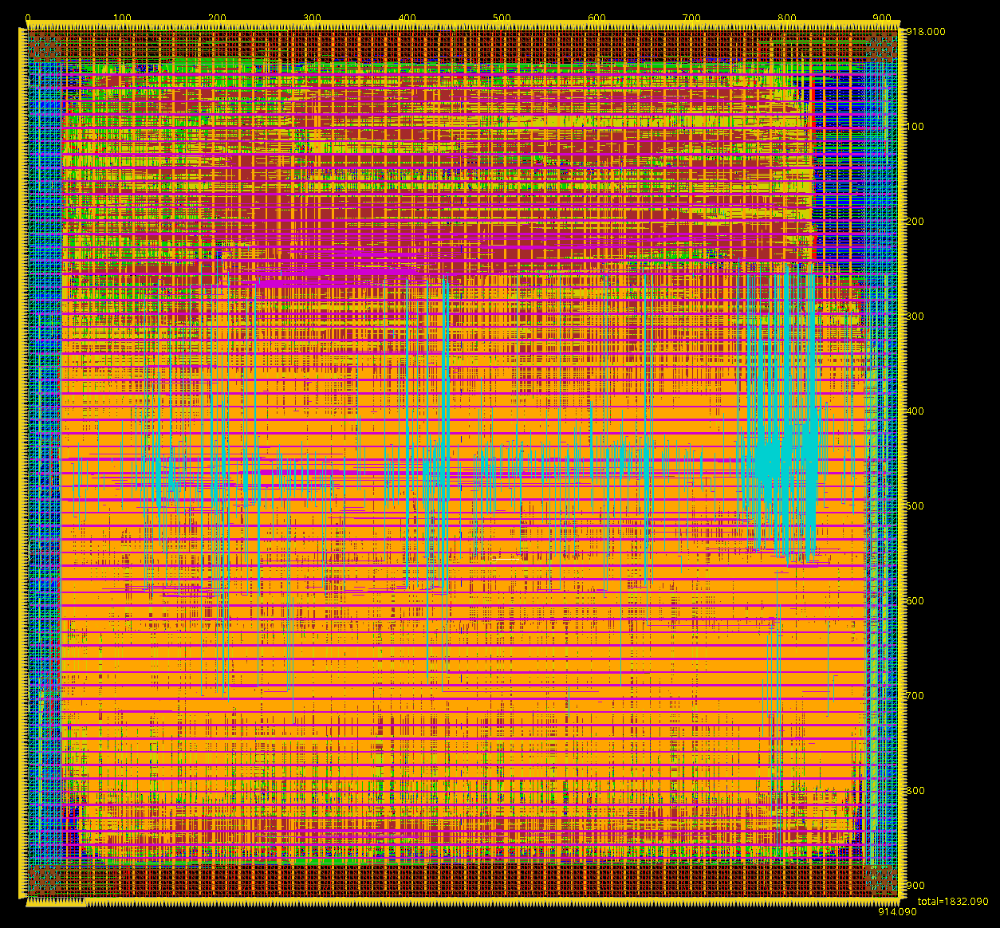
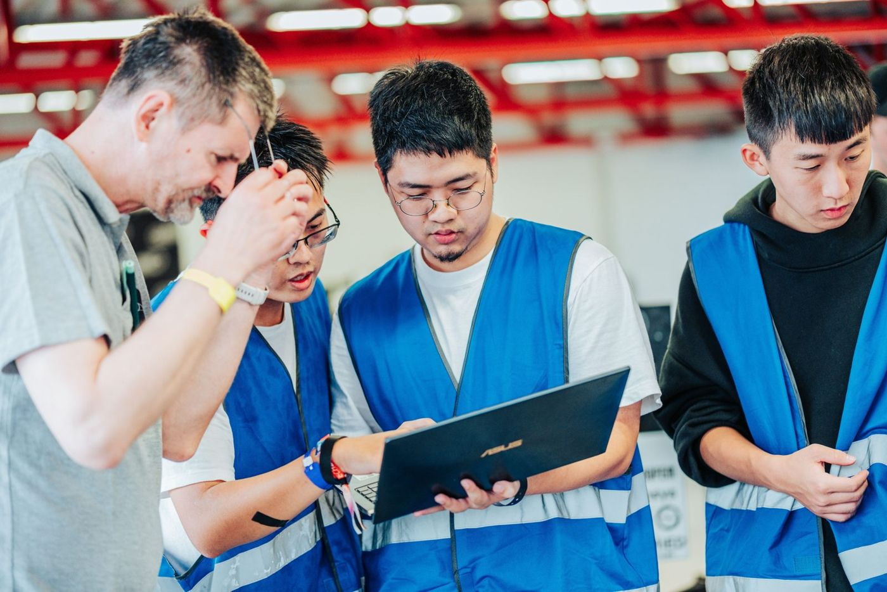
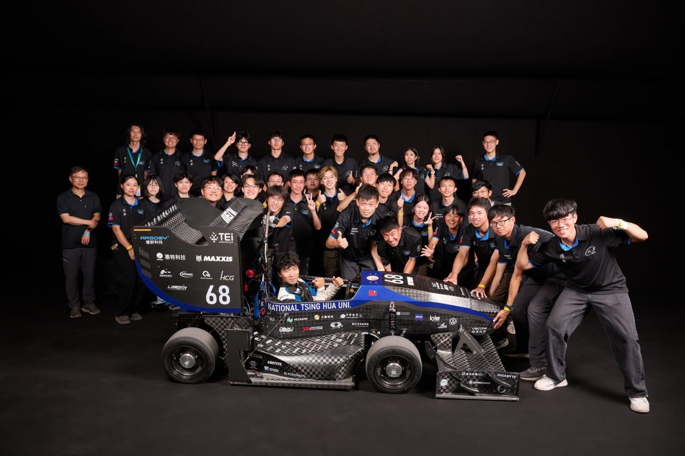

I am a digital IC designer at National Tsing Hua University (NTHU), Taiwan, working with Prof. Yuan-Hao Huang. I design chips and take them all the way to measured silicon.
My current chip, AEGIS, is an all-digital random number generator in TSMC 40 nm. I designed it from architecture to sign-off, built its test board, and measured it myself: 691.2 Gb/s peak throughput and 40.2 fJ/bit, with no detectable side-channel leakage over one million power traces.
I want to build AI accelerators with security designed into the architecture: side-channel and fault-attack resistance planned together with the dataflow from the start, and proven on real chips.
Research interests: secure AI accelerator architecture, energy-efficient digital circuits, hardware security, post-silicon validation.
I am applying to PhD programs in the US for Fall 2027.
News
- 2026 Received the Dr. Mei Yi-Chi Memorial Prize, NTHU's highest honor for graduating students.
- 2026 AEGIS measured in silicon: 691.2 Gb/s and 40.2 fJ/bit in TSMC 40 nm.
- 2026 Our pre-silicon AEGIS paper was a Best Paper Candidate at the VLSI Design/CAD Symposium.
- 2026 Presented the FPGA prototype of our hyperchaotic RNG at VLSI-TSA 2026.
- 2026 NTHU Racing ranked No. 1 in Asia in the Formula Student world ranking.
Education
National Tsing Hua University, Hsinchu, Taiwan
B.S. in Electrical Engineering, minor in Industrial Engineering and Engineering Management, 2021–2026
GPA 4.09/4.3. Advisor: Prof. Yuan-Hao Huang
Contact
Email: ee110030039 at gapp dot nthu dot edu dot tw
CV | LinkedIn | GitHub
AEGIS: a 691.2 Gb/s all-digital random number generator
Security for AI and IoT devices needs fast, cheap randomness for keys, authentication, and masking against side-channel attacks. The fastest true random number generators today use mixed-signal entropy sources, which must be recalibrated or redesigned at every new process node.
AEGIS is fully synthesizable. Standard SRAM supplies the entropy and also stores the output, so the design moves to a new process as a soft IP with no analog calibration. I designed it from architecture through sign-off, taped it out through TSRI's multi-project wafer shuttle to TSMC, and measured it on a 4-layer test board I designed myself.
| Technology | TSMC 40 nm CMOS, all-digital |
|---|---|
| Peak throughput | 691.2 Gb/s at 1.1 V, 450 MHz |
| Best energy efficiency | 40.2 fJ/bit at 0.6 V, 175 MHz (full chip, including SRAM) |
| Randomness | Passes all NIST SP 800-22 and SP 800-90B tests; IID min-entropy above 0.994 |
| Side-channel leakage | None detected: TVLA |t| < 4.5 over 1M power traces; CNN and Transformer attacks at chance level |
| Core | 0.44 × 0.44 mm², 213.4K gates |




Workload-optimized RISC-V SoC
I added FIR, matrix-multiplication and sorting accelerators to a RISC-V SoC. Faster compute engines alone gave about 20× over software. Adding my own DMA engine for each accelerator, an SDRAM arbiter with burst prefetch, and separate code and data memory raised that to 530×, and 990× for matrix multiplication. The lesson I carry into accelerator research: data movement, not arithmetic, sets the limit.

Conference papers
- Y.-S. Chang, C.-B. Chen, and Y.-H. Huang, “A 460.8-Gb/s 81.2-fJ/bit all-digital hyperchaotic TRNG chip with in-memory entropy source,” VLSI Design/CAD Symposium, Taiwan, 2026. Best Paper Candidate
- Y.-S. Chang, C.-B. Chen, and Y.-H. Huang, “51.2 Gbps high-entropy random number generator based on hyperchaotic system,” International VLSI Symposium on Technology, Systems and Applications (VLSI-TSA), 2026. [Paper]
Manuscripts in preparation
- Y.-S. Chang, C.-B. Chen, and Y.-H. Huang, “AEGIS: A 691.2-Gb/s 40.2-fJ/bit SRAM-seeded all-digital RNG based on hyperchaotic coupled-map lattice,” in preparation for 2027 Symposium on VLSI Technology and Circuits. Measured silicon.
- Y.-S. Chang, C.-B. Chen, and Y.-H. Huang, “AEGIS: A 691.2-Gb/s 40.2-fJ/bit SRAM-seeded all-digital RNG based on hyperchaotic coupled-map lattice,” in preparation for IEEE Transactions on Circuits and Systems I. Measured silicon.

2×2 MIMO-OFDM receiver
Frame detection, FFT, channel estimation and zero-forcing MIMO detection, taken from RTL to layout.

ECDSA accelerator on secp256k1
SHA-256 and ECDSA in Verilog, rescheduled into a pipeline with a Montgomery-ladder scalar multiplier for side-channel-aware design and an AXI-Stream interface. Taken through synthesis, equivalence checking, and place-and-route. This is where my interest in hardware security began.

Every year our team of about 70 students designs, builds and ships a new electric race car to compete in Europe. In 2026 we were ranked No. 1 in Asia in the Formula Student world ranking.
When I took over the electrical division in 2023, it had three members. Over two years I started weekly hands-on training in the workshop and rebuilt it to about ten. We designed the car's 500 V+ high-voltage system and low-voltage control units. At Formula Student Germany I wrote the Electrical System Form that certifies the car is safe to drive, and led the team through technical inspection. Building boards for this car is where I learned the skills I later used to measure AEGIS.



Awards
- 2026 Dr. Mei Yi-Chi Memorial Prize, NTHU's highest honor for graduating students (8 recipients)
- 2026 Formula Student world ranking, No. 1 in Asia, electric vehicle category
- 2026 Best Paper Candidate, VLSI Design/CAD Symposium
- 2024 1st Prize Overall, Formula Student Taiwan
- 2024 Honorable Mention, NTHU EE Undergraduate Research Project Award
Teaching
- 2026 Head TA, Logic Design Lab. Led 8 TAs for 110+ students
- 2025 TA, Logic Design Lab. FPGA labs for 130+ students
- 2024 TA, Electronics II. Power inverter and switching power circuits